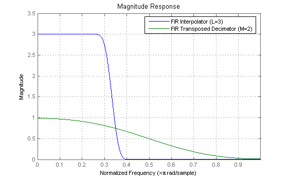
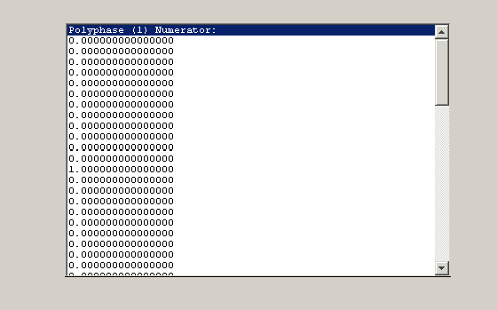
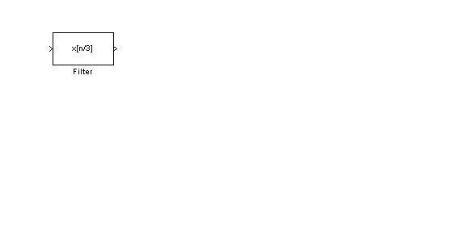

This demonstrates how to use the new multirate filter (MFILT) objects available in the Filter Design Toolbox.
Typing "helpwin mfilt" in the command window gives you a list of structures supported by the Filter Design Toolbox as well as methods operating on MFILT objects. For further information about a particular structure or method, type "helpwin mfilt/or method" or "help mfilt/or method". For example:
help mfilt/firinterp % Help on the FIRINTERP structure
FIRINTERP Direct-Form FIR Polyphase Interpolator.
Hm = MFILT.FIRINTERP(L,NUM) returns a direct-form FIR polyphase
interpolator Hm.
L is the interpolation factor. It must be an integer. If not specified,
it defaults to 2.
NUM is a vector containing the coefficients of the FIR lowpass filter
used for interpolation. If omitted, a low-pass Nyquist filter of gain L
and cutoff frequency of Pi/L is designed by default.
EXAMPLE: Interpolation by a factor of 2 (used to convert from 22.05kHz
to 44.1kHz)
L = 2; % Interpolation factor
Hm = mfilt.firinterp(L); % We use the default filter
Fs = 22.05e3; % Original sampling frequency: 22.05kHz
n = 0:5119; % 5120 samples, 0.232 second long signal
x = sin(2*pi*1e3/Fs*n); % Original signal, sinusoid at 1kHz
y = filter(Hm,x); % 10240 samples, still 0.232 seconds
stem(n(1:22)/Fs,x(1:22),'filled') % Plot original sampled at 22.05kHz
hold on % Plot interpolated signal (44.1kHz) in red
stem(n(1:44)/(Fs*L),y(25:68),'r')
xlabel('Time (sec)');
ylabel('Signal value')
See also MFILT/HOLDINTERP, MFILT/LINEARINTERP, MFILT/FFTFIRINTERP,
MFILT/FIRFRACINTERP, MFILT/CICINTERP, MFILT/CICINTERPZEROLAT,
FDESIGN/INTERP, FDESIGN/SRC.
help mfilt/polyphase % Help on the POLYPHASE method
POLYPHASE Polyphase decomposition of multirate filters.
P=POLYPHASE(Hm) returns the polyphase matrix of the multirate filter
Hm. The ith row of the matrix P represents the ith subfilter.
POLYPHASE(Hm) called with no outputs launches the Filter Visualization
Tool (FVTool) with all the polyphase subfilters to allow analyses of
each component individually.
To create a multirate filter (MFILT) object, you need to select the structure to be used. Most constructors take the coefficients of the filter as an optional last input argument. If the coefficients are not specified, a default filter is designed according to the interpolation and/or decimation factor(s).
L = 3; % Interpolation factor M = 2; % Decimation factor
Direct-Form FIR Polyphase Interpolator. The default design is a Nyquist filter with a cutoff frequency of pi/L and a gain of L.
h1 = mfilt.firinterp(L);
Direct-Form Transposed FIR Polyphase Decimator. The default design is a Nyquist filter with a cutoff frequency of pi/M and a gain of 1.
h2 = mfilt.firtdecim(M);
To manipulate the coefficients of a filter as a regular MATLAB vector, you can always get them from the object. To modify the coefficients of an existing MFILT object, you can set new ones. Direct-form FIR structures only have numerator coefficients; these are also known as the filter weights.
h2
h2 =
FilterStructure: 'Direct-Form Transposed FIR Polyphase Decimator'
Numerator: [1x48 double]
DecimationFactor: 2
NonProcessedSamples: []
ResetBeforeFiltering: 'on'
States: [23x1 double]
NumSamplesProcessed: 0
b = get(h2,'Numerator'); % Assign the coefficients to vector b bmod = firnyquist(8,M,kaiser(9,0.1102*(80-8.71))); set(h2,'Numerator',bmod); % Set the modified coefficients
The analysis of multirate filter (MFILT) objects is similar to that of discrete-time filter (DFILT) objects. In particular, the Filter Visualization Tool (FVTool) can be used to perform most of the analysis.
h = fvtool(h1,h2); set(h,'MagnitudeDisplay','Magnitude') legend(h, 'FIR Interpolator (L=3)', 'FIR Transposed Decimator (M=2)', 'Location', 'NorthEast') set(h, 'Color', [1 1 1])
Additionaly MFILT objects provides analysis of the polyphase components. Calling the polyphase method without output arguments launches an FVTool session with all the polyphase subfilters.
polyphase(h1)
By default, the states of the filter, stored in the 'States' property, are each initialized to zero. Furthermore the 'ResetBeforeFiltering' property is 'on' which means that the object is reset before the filter is run. This allows to filter the same sequence twice and produce the same output. For example:
x = 1:6;
y1 = filter(h2,x) % First run
y1 =
0 -0.0184 0.9676
At this point, we verify that the object holds non-zero final conditions.
zf1 = h2.States
zf1 =
3.0133
3.4904
-0.0369
y2 = filter(h2,x) % Second run
y2 =
0 -0.0184 0.9676
zf2 = h2.States
zf2 =
3.0133
3.4904
-0.0369
Notice that after the second run, the states of the object are the same as after the first run. Because the 'ResetBeforeFiltering' property was 'on', the states were reinitialized to zeros before the second run.
The user can specify initial conditions by turning the 'ResetBeforeFiltering' property 'off' and setting the 'States' property. If a scalar is specified, it will be expanded to the correct number of states. If a vector is specified, its length must be equal to the number of states. For example:
h2.ResetBeforeFiltering='off'; h2.States = zf1; y3 = filter(h2,x) % Run the filter with final states of first run
y3 =
2.9580 4.9853 2.4440
zf3 = h2.States
zf3 =
2.9580
3.4904
-0.0369
As expected, both the output of the filter and the states are different than in the first run.
Setting the 'ResetBeforeFiltering' property 'off' is a convenient feature for streaming data to the filter. Breaking up a signal and filtering in a loop is equivalent to filtering the entire signal at once. We will emulate streaming data by using the filter in a loop:
reset(h2); % Clear history of the filter xsec = reshape(x(:),2,3); % Breaking the signal in 3 sections yloop = zeros(1,3); % Pre-allocate memory for i=1:3, yloop(i)=filter(h2,xsec(:,i)); end yloop
yloop =
0 -0.0184 0.9676
We verify that yloop(signal filtered by sections) is equal to y1 (entire signal filtered at once).
If the input signal x is a matrix, each column of x is seen by the filter as an independent channel.
reset(h2);
x = randn(10,3); % 3-channels signal
y = filter(h2,x)
y =
0 0 0
-0.0094 0.0095 -0.0022
0.0794 0.3678 0.5956
0.0440 -0.2253 1.1980
0.6913 0.3884 0.3812
zf = h2.States
zf =
0.9268 -0.0027 0.4663
-0.5359 -0.6960 0.3092
0.0066 0.0123 -0.0029
Notice that the object stores the final conditions of the filter for each channel, each colum of the 'States' property corresponding to one channel.
When the Signal Processing Blockset is installed, you can generate a Simulink block of the MFILT filter object if the structure is supported by Signal Processing Blockset. For example, the Direct-Form FIR Polyphase Interpolator:
block(h1);